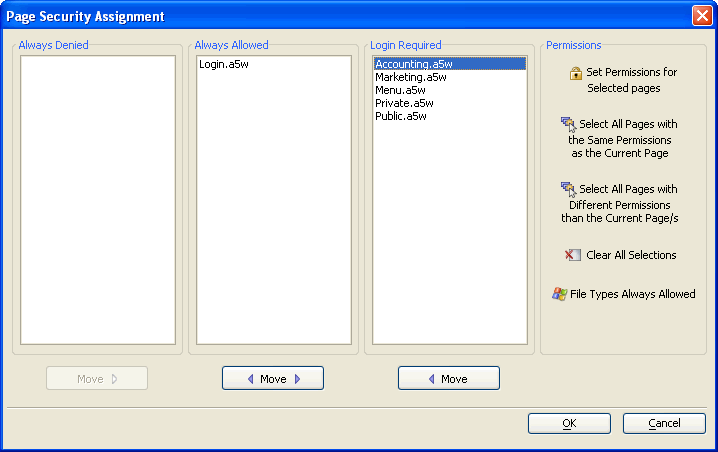
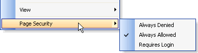

Defining Page Security
The third step when implementing the web security framework is to define which of your pages will fall into these three categories:
pages that web users can never open (Always Denied)
pages that web users can open without login (Always Allowed)
pages that web users can open after successful login (Login Required)
Display the Web Projects Control Panel.
Click Security to display the Web Security dialog.
-
Select Page Security and click OK to display the Page Security Assignment dialog. This dialog initially lists all your pages except any pages listed as redirect pages in the left-most Always Denied column.

Procedures
Initially, all pages are listed under Always Denied. To make one or more pages available without login:
Select the pages in the Always Denied list and click Move
 to move them to the Always Allowed
list.
to move them to the Always Allowed
list.You may also select the pages in the Login Required list and click
 Move to move them to the Always Allowed list.
Move to move them to the Always Allowed list.
 Note : If you disable
the security framework, all pages will be available without login.
Note : If you disable
the security framework, all pages will be available without login.
To make one or more pages unavailable:
Select the pages in the Login Required and click
Move to move them to the Always Denied list.Select the pages in the Always Allowed and click
Move to move them to the Always Denied list.
To define access privileges for one or more pages that requires login.
Optionally, select one or more pages in the Login Required list.
Optionally, select a single page and click Select All Pages with the Same Permissions as the Current Page.
Optionally, select a single page and click Select All Pages with Differerent Permissions than the Current Page.
Click Set Permissions for Selected Pages to display the <span class=Screen>Permissions</span> dialog.
- All pages listed in Login Required must have one or more groups assigned.
To control access to certain file types:
Click Files Allowed by Type. to display the <span class=Screen>Files by Type List</span> dialog.
-
Clear the check mark from any file type that you wish to prevent users from accessing.
Click OK to continue.
Setting Permission for a Single Page
You can set the permission for a single page from the right click menu on the Web Projects Control Panel:
-
Select the name of a page in the list on the Web Projects Control Panel.
-
Right click to open the right click menu.
-
If the name selected is a a5w, htm, or html page, the menu will show an option for Page Security.

Select Page Security and the permission level desired.
If Requires Login is selected, the <span class=Screen>Permissions</span> dialog will display.
Limitations
Web publishing applications only.
See Also
Web Application Security Framework